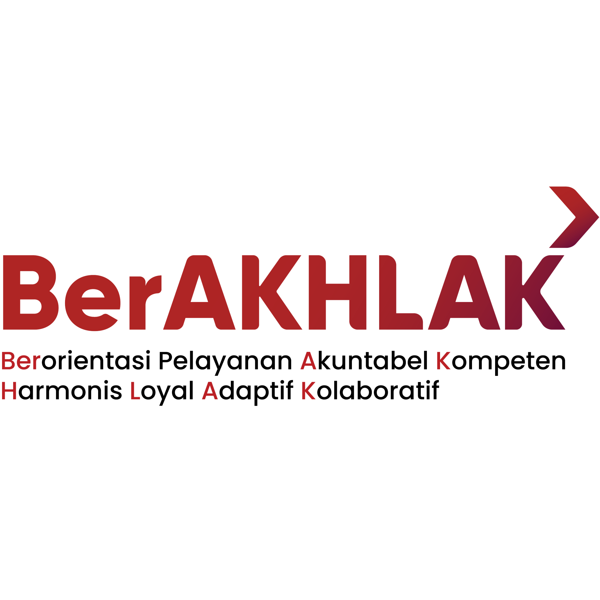

ASN
ASN


Penata Kelola Penyehatan Lingkungan Ahli Pertama
Berperan dalam mendukung pelaksanaan tugas Bidang Tata Lingkungan melalui penyiapan dan pengelolaan dokumen serta kegiatan bidang. Juga bertugas sebagai Operator Amdalnet dan admin website resmi DLH Kabupaten Bengkulu Utara untuk mendukung pengelolaan layanan dan penyebarluasan informasi lingkungan hidup.